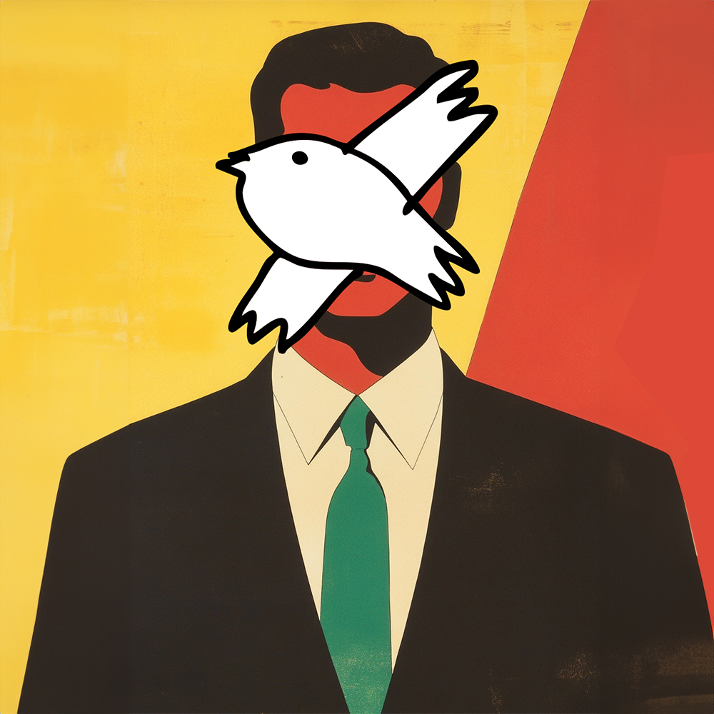
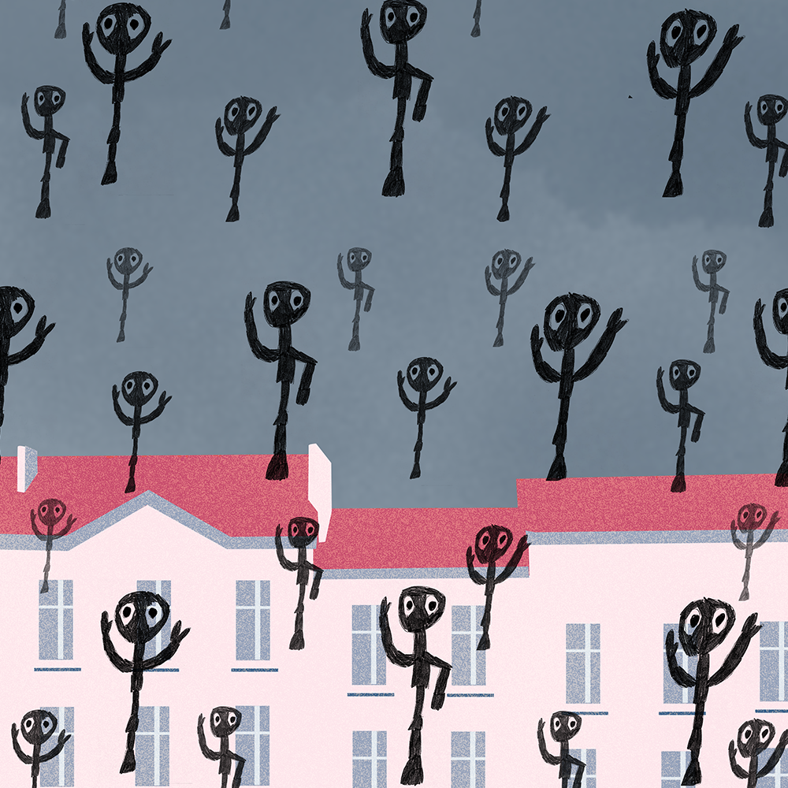
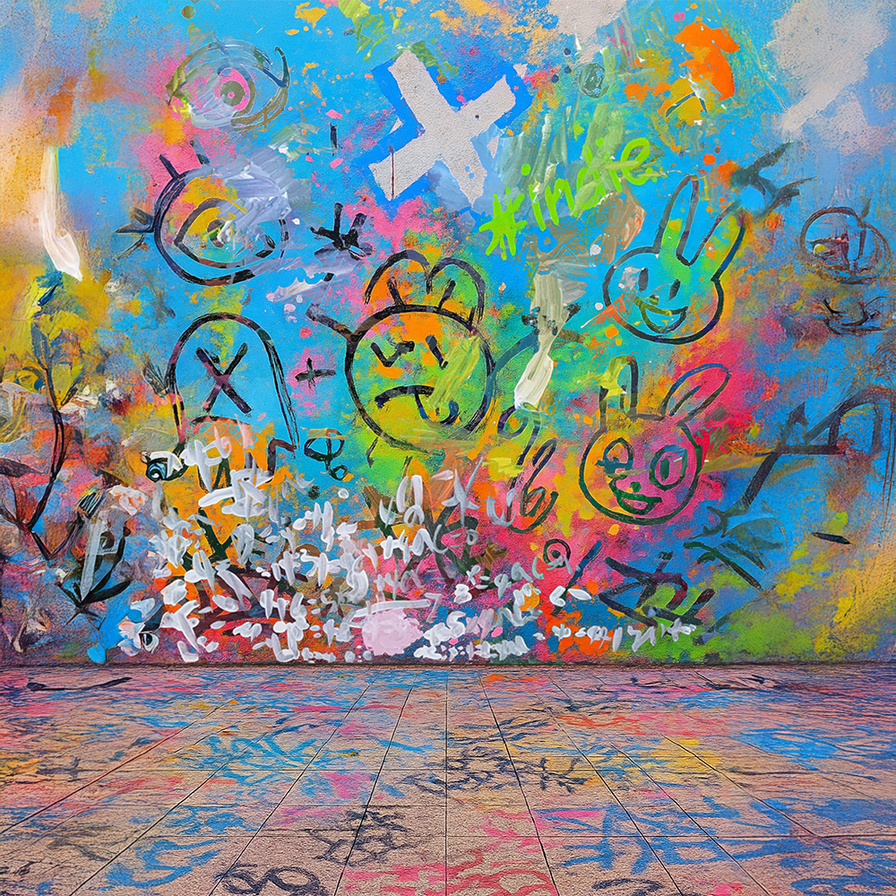
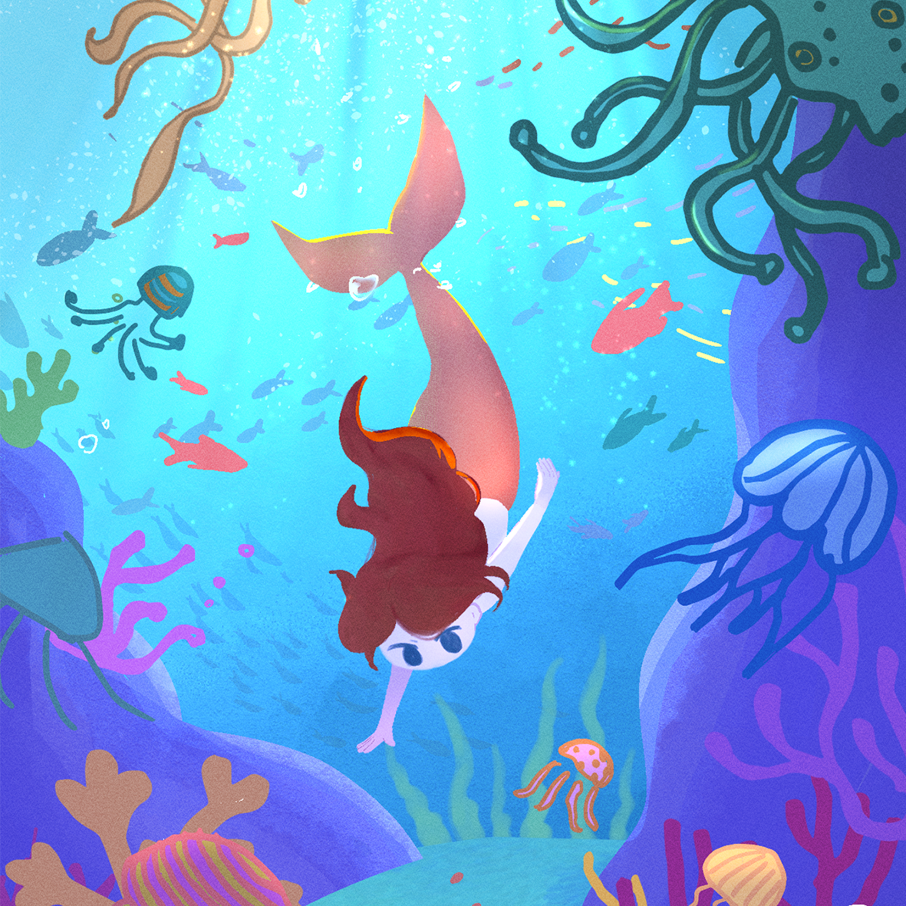
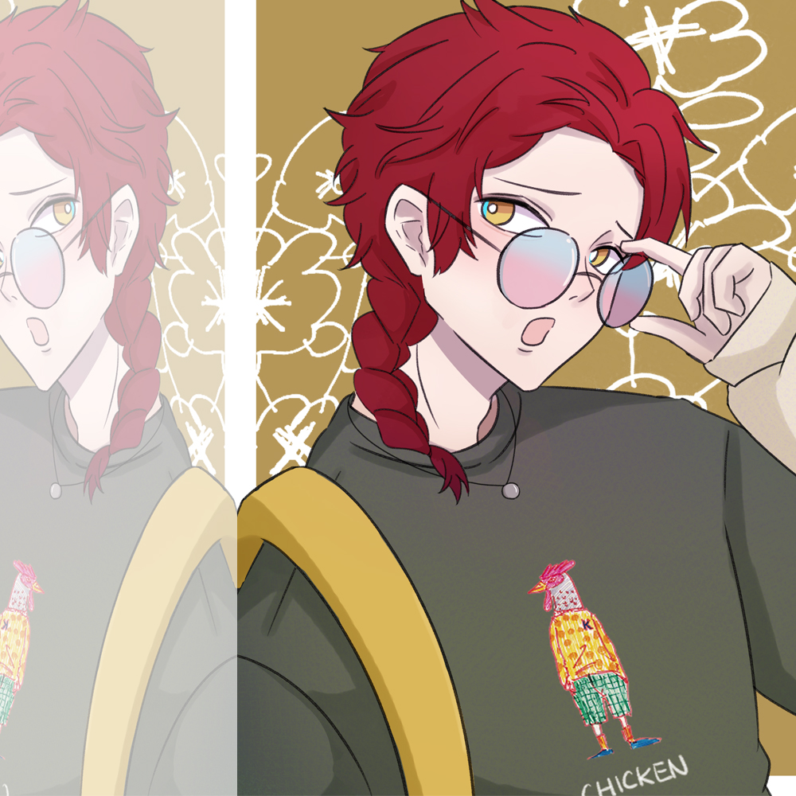
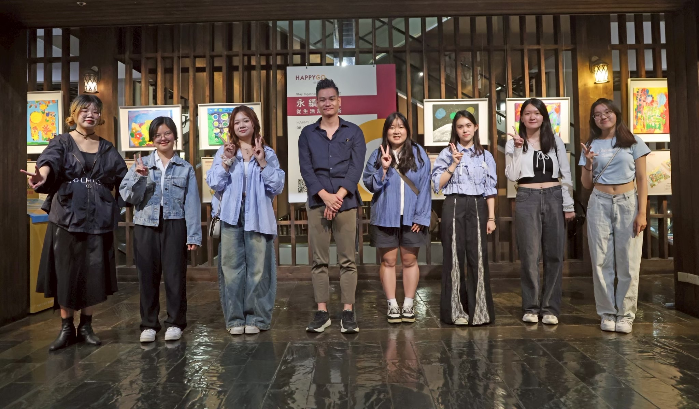
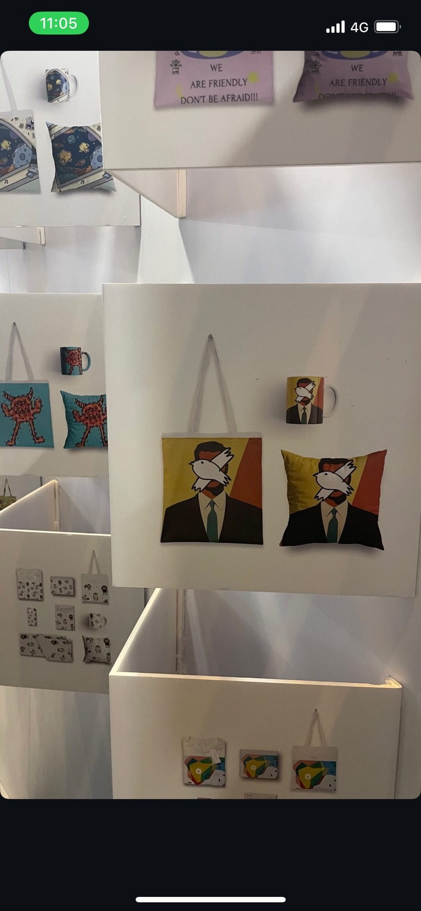
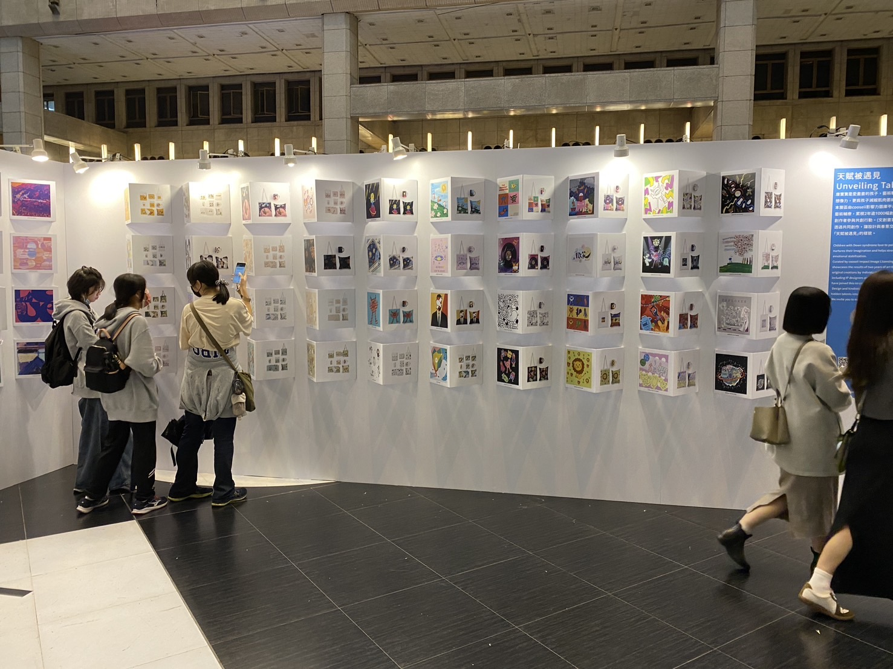

點點善共創計畫
將不同創作者的視覺語言整合於同一畫面之中

Project Info
類型｜平面設計
創作形式｜共創創作
合作單位｜點點善
展出｜台中遠東百貨、台北車站
Concept
本專案為與「點點善」合作之共創計畫，透過與唐氏症創作者共同創作， 結合手繪、數位媒材與 AI 輔助，將不同創作語言融合於同一畫面之中。

Golconda, Reimagined
靈感取自馬格利特作品《Golconda》，將原作中重複降落的人物意象重新詮釋為「善意的降臨」。 畫面中的角色以簡化且直覺的筆觸呈現，象徵日常生活中微小而真實的善意行為。 這些形體如同雨般落下，散佈於屋頂與城市之中，隱喻善意在生活中的流動與擴散。
Unseen
靈感來自馬格利特《戴圓頂帽的男人》，以「遮蔽」作為觀看的切入點。 畫面中以唐氏症創作者所繪製的鳥取代人物臉部，透過不同創作者的視覺語言交織， 重新思考我們如何理解他人。作品試圖打開既有的觀看方式， 讓「看見」不再只是外在辨識，而是一種更深層的感受與理解。




Exhibition
展出紀錄
本系列作品曾於台中遠東百貨與台北車站展出， 作為點點善共創計畫之成果呈現。


